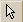
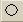
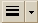
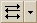
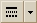
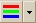
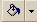
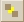
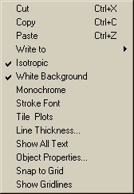

The Plot Viewer and Chart Viewer include an annotation toolbar for adding text, lines, and shapes to the Viewer windows for presentation purposes.
|  | Select an area of the plot |
| Draw a line | |
| Draw a rectangle | |
|  | Draw a circle |
| Add a text box | |
|  | Select line thickness |
|  | Select arrow style |
|  | Select line style |
|  | Select line color |
|  | Select fill color for shapes |
| Undo previous annotation action | |
| Redo previous annotation action | |
| Bring object to front | |
|  | Bring object to back |
Standard Windows commands for Copy and Paste apply to the annotation tools.
This toolbar does not apply to a plot or chart itself, only to annotations of either one. Use the Plot Viewer toolbar or Chart toolbar to make changes to the way the plot is displayed.
From the Plot Viewer Annotation toolbar, select a tool by clicking one of the buttons described below. When your mouse pointer hovers over a button, a ToolTip identifies its name. Place the pointer in the document window and draw the desired object or insert text.
Lines and figures are drawn in a width and style determined by the current line width selection and style selection. The color is determined by the current line color selection. Figures are filled in the current fill color. Text is drawn using the default line/text color. You can edit these object properties. See the section, Object Properties below.
When you create annotations on an existing ASAP plot, using the Annotations Toolbar, you can move objects and edit their properties.
To move an object, select it and move the mouse over one of its selection points until the pointer's cross appears. Depress the mouse and move the object.
Select an annotation object, such as a rectangle, and right-click to open a pop-up menu:

Select Object Properties to open the Plot Viewer Object Properties Dialog box for editing.